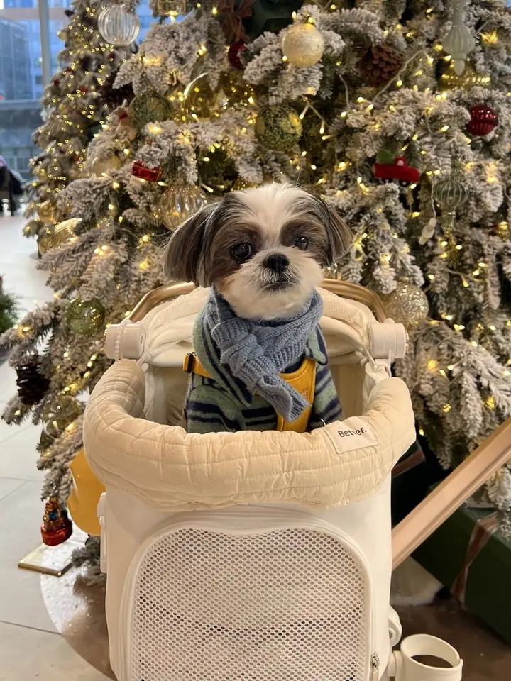
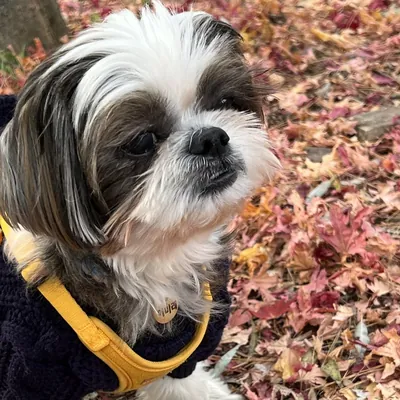
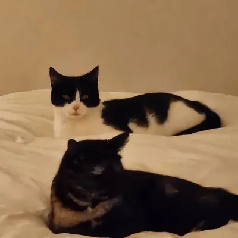

Your pet's passport to the world. Plan it all here.
Check your destination's pet import rules and every airline's dog & cat policy, verified at the official source, then book flights, pet-friendly hotels and airport rides, all in one place.

Where are you flying with your pet?
Plan and book your whole pet trip in one place
Flights, pet-friendly hotels and airport rides with your dog or cat: everything ready before you go.
✈ Flights
Compare fares, then book your pet’s spot directly with the airline: in-cabin pet space is limited per flight. Under-seat carrier sizes.
Compare flights on AviasalesSearch flights on ExpediaFind cheap flights on Kiwi.com
Affiliate links: we may earn a commission at no extra cost to you. Disclosure.
🏨 Pet-friendly hotels
Chain pet fees, weight limits and number of pets, plus airport pet relief areas and dog parks, from official sources. Pick a city:
Luxury hotels set pet rules hotel by hotel:
🚕 Airport rides with your pet
- Uber Pet: 1 pet (a small animal such as a dog or cat); extra pets at the driver's discretion; no breed or size limits. Costs more than other ride options (shown in the upfront fare); a cleaning fee may apply for waste, hair or damage. Uber help ↗
- Lyft Pet: 1 well-behaved animal, up to 4 people, U.S. only. Additional fee that goes to the driver (Lyft's driver page: $4 bonus per Pet ride). Pet in a carrier, on a blanket or at your feet. Lyft help ↗
- Robotaxis: Waymo, Zoox and Tesla Robotaxi do not take pets; service animals only. Waymo ↗ · Zoox ↗ · Tesla Robotaxi ↗
Service animals ride on Uber and Lyft at no extra charge even without a Pet ride (Uber and Lyft help pages). Official pages checked ; no affiliate links. Details.
Compare airline pet policies
In-cabin rules, weight limits, fees and hold options, each checked against the airline's official page. Full details and carrier sizes on every airline page.
| Airline | In cabin | Max weight | Fee (from) | Hold / cargo | Last verified |
|---|---|---|---|---|---|
| Air Canada | Yes | Baggage compartment: up to 45 kg (100 lb) pet + kennel; max 292 cm (115 in) linear | CA/US $50-$60 one way | Yes, in the baggage compartment (hard-sided kennel) with seasonal and route embargoes; Air Canada Cargo (AC Animals) for unaccompanied pets. | 2026-10-22 |
| Air France | Yes | 8 kg (17.64 lb) pet + carrier in cabin; over 8 kg and up to 75 kg (165.35 lb) must travel in the hold | Check with airline | Yes: pets over 8 kg and up to 75 kg with carrier travel in the hold (subject to availability). | 2026-10-22 |
| Alaska Airlines (and Hawaiian Airlines) | Yes | Baggage compartment: up to 150 lb pet + kennel combined (official newsroom, Aug 26, 2026) | $100 per carrier each way ($35 wholly within Hawaii) | Yes: temperature-controlled baggage compartment on your flight, or Pet Connect via Alaska Air Cargo for unaccompanied pets. | 2026-10-22 |
| American Airlines | Yes | 20 lb (9.07 kg) pet + carrier on A321T premium cabins; checked kennel max 100 lb (45 kg) combined. No general in-cabin limit stated. | $150 per kennel each way | Checked pets only for active-duty U.S. Military and State Department Foreign Service on official orders. Others: American Airlines Cargo (PetEmbark). | 2026-10-22 |
| British Airways | No | Check with airline | Check with airline | Pets travel in the hold, arranged by partners: PetAir UK (from the UK) or IAG Cargo (to the UK). | 2026-10-22 |
| Delta Air Lines | Yes | Check with airline | $150 USD/CAD each way (tickets issued on/after Apr 8, 2025; $95 before) | No checked pets for the general public. Delta Cargo ships pets only for active U.S. Military or U.S. State Department Foreign Service personnel with permanent change of station orders (until further notice). | 2026-10-22 |
| Hawaiian Airlines | Yes | Baggage compartment: up to 150 lb (68 kg) pet + kennel combined; heavier pets via Pet Connect (Alaska and Hawaiian Air Cargo). No in-cabin weight limit stated: the pet must fit comfortably in the carrier under the seat. | $100 per carrier each way ($35 wholly within Hawaii) | Yes: climate-controlled baggage compartment on your flight in a hard-sided kennel, with a vet health certificate issued within 10 days of travel; or Pet Connect via Alaska and Hawaiian Air Cargo for pets traveling without a passenger. Only dogs and cats in the baggage compartment to/from Hawaii and international locations. | 2026-10-23 |
| JetBlue | Yes | Check with airline | Check with airline | No large dogs accommodated; pets travel in the cabin only. | 2026-10-22 |
| Korean Air | Unconfirmed | Check with airline | Check with airline | Check with airline | Not yet |
| Lufthansa | Yes | 8 kg pet + carrier in cabin | EUR 65-85 / USD 80-100 | Yes: dogs and cats over 8 kg as excess baggage in the air-conditioned hold; other animals via Lufthansa Cargo. | 2026-10-22 |
| Southwest Airlines | Yes | Check with airline | $125 per pet carrier each way | No. Southwest does not transport pets in the cargo compartment. | 2026-10-22 |
| United Airlines | Yes | No weight limit (United states there are no weight or breed limitations; pet must fit the carrier) | $150 each way | PetSafe checked-pet program ended. Pets fly in cargo only with certain active-duty military or State Department employees. | 2026-10-22 |
"Check with airline" means the detail was not stated on, or could not be read from, the airline's official page on the date shown. See policy updates.
Gear & guides for the trip
Carriers that fit under the seat, IATA crates for the hold, and everything else for the journey. Dimensions copied from the maker's official page.
Under-seat carrier size by airline
Read the guide →
GuideBest airline-approved soft carriers
Read the guide →
GuidePet carrier backpacks for flying
Read the guide →
GuideIATA hard crates for cargo
Read the guide →
GuideCat travel checklist
Read the guide →
GuideDog road-trip packing list
Read the guide →
GuideTravel water bowls
Read the guide →
Browse all products & accessories
Some product links are Amazon affiliate links (tag petpolicychec-20); we may earn a commission at no extra cost to you. This never affects our data.
From the community
Real trips from real pet owners.
Made by a pet family in Korea
PetPolicyCheck is made by a family in Korea with one Shih Tzu and two cats. These are ours.
About us & disclaimer →


Reach pet parents planning a trip
Sponsor a guide, an airline page or the footer slot.